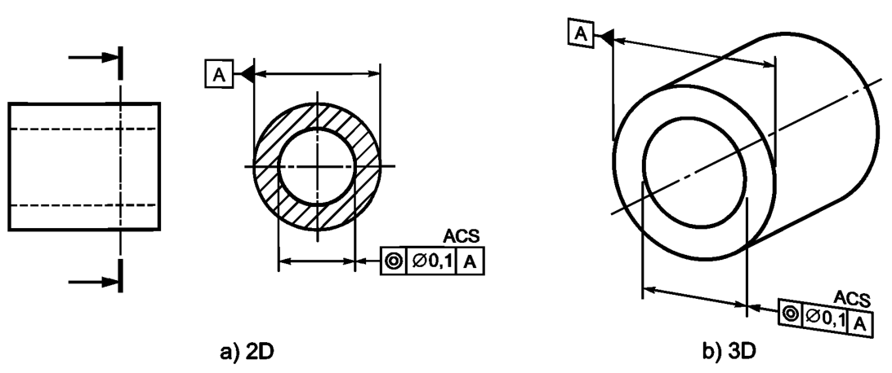
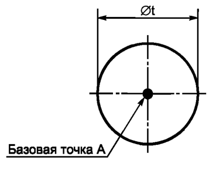

Выявленный центр круговой линии, полученной в любом поперечном сечении отверстия, должен располагаться внутри окружности диаметром 0,1, центр которой совпадает с определенной в этом же сечении базовой точкой А, см. рисунок ниже
Поле допуска ограничено окружностью, диаметр которой равен значению допуска t (если перед ним указан знак «ф»), а центр — совпадает с базовой точкой, см. рисунок ниже
